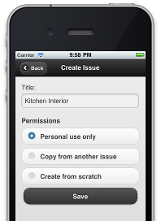

A logstream is a publically verifiable set of messages related to a single topic. You can think of it as a Facebook feed for projects, tasks, or anything you want to track; a twitter feed for data.
Imagine you're having a new house built. That's a complex process, with lots of tasks in progress at once. Let's focus on one: the interior design for your new kitchen. You create a logstream to track that.
Logstreams have a set of data associated with them. The data is made up of key-value pairs (in fact they can be much more complex, and include arbitrary data structures, but key-value pairs allow us to do some neat analysis). Lets say we begin with:
{
title: Kitchen Interior,
tags: [interior, furnishings, phase-3, kitchen],
budget: 14000,
deadline: 2011-12-18,
responsible: Anne
}
NB: In the examples, curly braces just show data that belongs together, while square brackets show a list of similar bits of data. This is only for convenience, though it is similar to the way messages are represented in code (they are in JSON format). When using logstream, however, you work through a user interface with fields to fill in, drop down lists, etc, so you don't have to work with the underlying data.
A logstream isn't a to do list. You don't have to break topics down into steps. You can, but it isn't required. In this example we won't.
You modify a topic by adding messages to it. There are lots of different kind of messages. One kind of message is a change to one of its bits of data. For example, we have to squeeze the budget a bit, so the following message is sent.
{
type: modify,
key: budget,
value: 13000
}
Modifying data is only one kind of message: the modify message. But that is just the tiniest tip of the iceberg for logstreams. Messages can be of any type, and the stream of messages acts just like a facebook stream or a twitter feed. Coming back to our example: Anne, the interior designer, finds a superb light-fitting, and wants to get feedback on it. She adds the message:
{
type: file-uploads,
image: [uploaded file],
comment: What do you think about this, Bill, for beside the pantry?
}
This message, and the attached image is added to the stream alongside all the others.
There are no restrictions to the message types, or the date they contain. There are a few defaults, however. For defaults we've seen file-uploads, and modify messages. There are also messages to change stream permissions (more on permissions below). You can email a special email address for a stream, and anything email to that (or cc'ed to it) will be added to the stream as an email message.
Often you don't want a message to appear in the stream at the point where you send it. You might want to set up a reminder for a later date, for example. A deferred message type allows you to add another message to be played at a later date. And such a scheduled message can be altered or descheduled by further messages.
{
type: deferred,
when: 2011-11-23T12:00:00.0,
deferred-message: {
type: warning,
comment: Only one month to go, folks.
}
}
Another common use case is when you want several messages to all hit at exactly the same time: either all of them or none of them. For example, you may need to change a budget and a delivery date at the same time, without any risk that anyone could see one change without the other. To do this you can use a group message, that combines multiple other messages together.
{
type: group,
sub-messages: [{
type: modify,
key: budget,
value: 12000
},{
type: modify,
key: deadline,
value: 2011-12-23
}]
}
Initially I said that streams can have data associated with them, which can then be modified using modify messages. Well all stream activity has to occur through messages. The initial block of data associated with a stream is added with a group message of this kind. Without a message, a stream is featureless and void.
These defaults cover 99% of use-cases, but messages not covered by this can be added to the stream without modification. Some messages might need special behavior, however, and in most cases messages will need to be edited and viewed in a user interface (UI). UI handlers for editing a viewing a new message type can be registered, and a core handler can be registered to handle special message types.
Streams are aggregated into projects. A project might be your house being built. Whereas the streams may be individual tasks that need accomplishing, or areas of the build.
Streams can be shared with multiple people. For each stream, you can have a global list of people who can see that stream, and who can add messages to the stream.
In addition, for each message type, you can override the general settings and set read and create permissions for specific users. So for example, you might want Anne's assistant, Carl, to be able to see the interior design stream, but not anything related to the budget. You can simply set Carl to not have read permissions on budget-related messages.
For a project, each user can drill down into the streams they have permission for and see the messages they have permission to see. They can also see a combined stream, showing all the messages on all the streams in that project (subject to their permissions). This forms a Facebook-feed like view of everything important to a project.
At the start of this explanation, I mentioned that key-value data associated with the stream can be analysed. For many kinds of data (anything for a time, date or quantities, for example), you can view the message stream as a graph. You can ask to see the graph of the budget over time, for example.
If you were using a logstream to chart the progress of a project, you could use this to graph the defect rate over time. For a logstream to track your weight loss, it could graph your weight over time.
Using messages exclusively means the whole history of changes and updates is captured in the set of messages. In fact, messages internally are stored with more data than just that shown above. The first message might be stored as:
{
by: {
username: bill,
auth: [...]
},
when: 2011-08-01T12:57:46.0,
message: {
type: modify,
key: budget,
value: 13000
},
parent: "93731c2b73e0beb312a1b11f443b22018f63cf9b0dbfd35e10e146c3db36ef15"
}
The message is stored along with who created the message, an auth block of data that is used to validate that the person who created the message really was who they claimed to be (the details of that are not important here), the time when the message was added and the message content iself.
The when and by of a message allows us to track when things happened. If you're expecting the kitchen designer to send you plans for agreement by Tuesday, and they don't turn up until Friday, then the time logging shows that clearly. And as we'll see below, it shows it in a way that is impossible to fake.
So what is that huge dump of random characters labelled parent at the end? Well this is where things get neat. Messages are held in a stream - a sequence, where each message keeps track of the one message that came before it. When a new message is added, its parent is the last one on the list.
When a message is added, its parent is found, and then the whole message object is passed through an algorithm called a secure hash algorithm to produce a long number, which is the message's identity. The interesting thing about this number is that, if you have the number, you can't fake a message that matches it. If I have the number for a message, I can guarantee that the contents of that message haven't been tampered with. And because that message contains the secure hash for its parent, I can guarantee that the whole stream of messages hasn't been tampered with, right back to the first message.
How secure is this? Well the message identities are created by a system called SHA256, that is certified by the US National Security Agency as being secure for government, intelligence and military communications to the highest level.
Put another way, if whatever you're tracking ends up in court, anyone with a message number can verify the entire prior history of everything in that stream. There is no way to change anything without that number changing. But on the other hand, if you have the number, there is no way of being able to figure out what the original message was either.
Which makes this approach great for situations with restricted permissions. For example, I am a contractor on your house build. I don't get to see everything, but I can add status update messages to some streams. Every time I do that, I get a receipt: the message identity of the message I just added. That means I can verify everything that was in the stream at the point of me sending the message, even if I don't have access to the stream data, or the computers they sit on.
Why is this important? Well imagine that I fall out with Anne, the interior designer. I think she recklessly overspent her budget. She claims I reduced the budget after I knew she'd ordered an expensive kitchen suite. She has a receipt for the message where she tells me she ordered the kitchen. That receipt alone proves one way or another whether my change in budget was before or after that point. Even if I were to go fiddling around in the database, and can make changes to the stored data, her receipt proves that I've been tampering. I can't even claim that the database was corrupted, because that too would show up.
And because permissions are also changed by message, the same process allows us to prove who had access to what information when. If someone claims that they weren't given access to a piece of data until it was too late: any receipt after that point verifies whether this is true or not.
Because receipts verify the content, but don't give it away, they are made public. Anyone can see the receipt of a stream at any time. This allows everyone with an interest in a stream to keep occasional copies of the receipt, and in doing so it ensures that the data is kept without modification.
A Note About Security and Provability
The security features of logstream are powerful, but entirely behind the scenes. Logstream is designed to be used in applications where they are needed, but it isn't limited to those applications. If you're just tracking your swim-times, or you want a stream for private use to track a consulting job, that's fine too. The security features won't get in the way.
Logstream is intended for use whenever you need to track something. Whether it is a quantity that changes over time, or periodic events that happen. Whether it is a conversation, or a project. The applications are unlimited. Here are some examples.
Ian Millington (idmillington@googlemail.com)
You can download this project in either zip or tar formats.
You can also clone the project with Git by running:
$ git clone git://github.com/idmillington/logstream